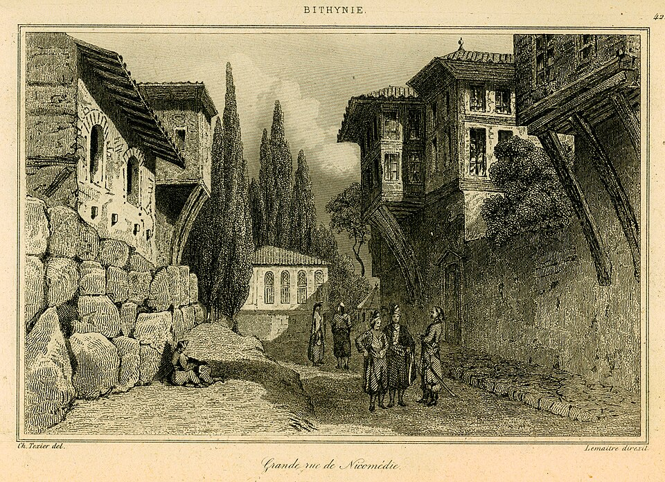
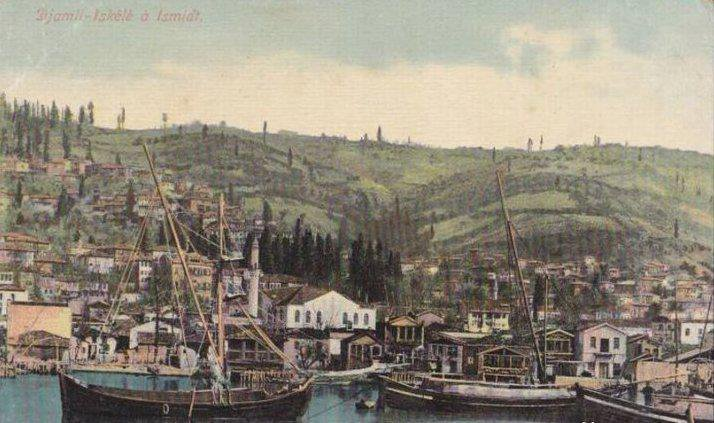
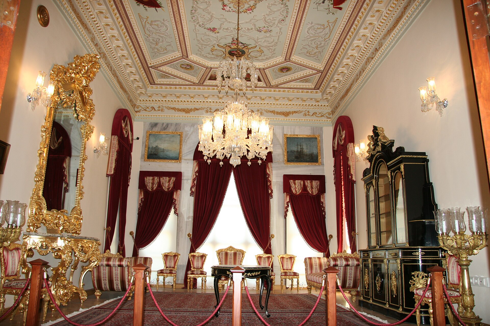
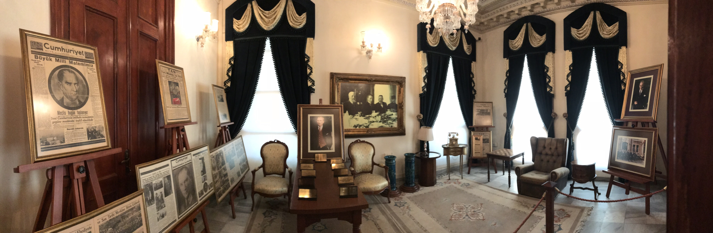
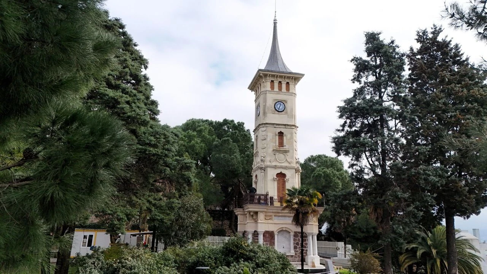
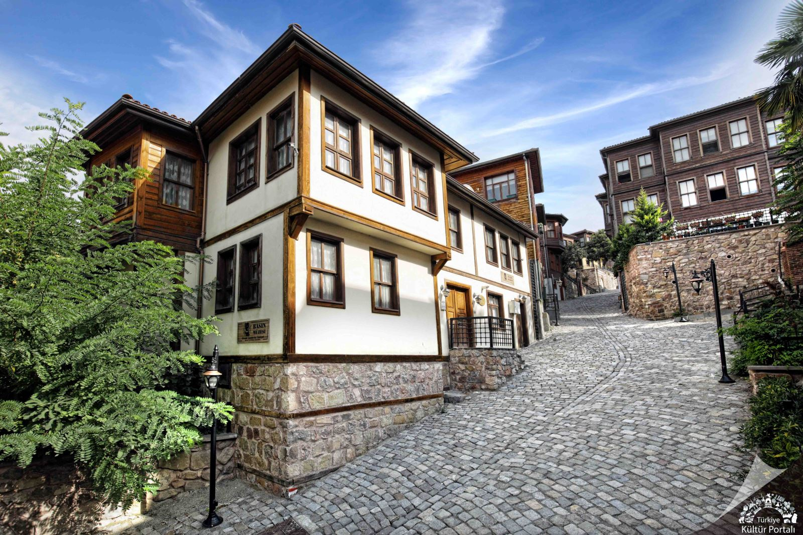
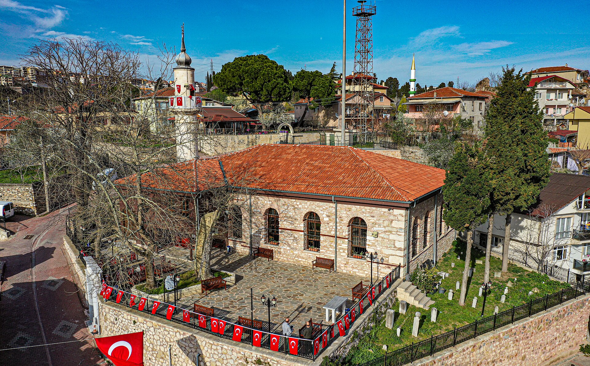
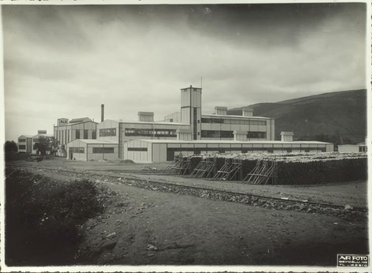

Şehrim: İzmit
✰✰✰Eski Nikomedia'dan Osmanlı'ya uzanan tarihiyle, bugünün İzmit'i✰✰✰
Sokaklarında büyüdüğüm, unutulmaz anılar ve dostluklar biriktirdiğim bu şehrin yeri benim için her zaman çok ayrıdır.
İzmit Körfezi
Muhteşem deniz manzarası ve sahil yürüyüş yollarıyla huzur veren bir kıyı şeridi.
Tarihi Doku
Antik Nikomedia'dan günümüze uzanan zengin bir tarih ve kültür mirası.
Doğa
Yeşil alanları, parkları ve çevresindeki dağlarıyla nefes alan bir şehir.
1. Tarihi Dönüm Noktaları
Antik Çağ: Roma İmparatorluğu'na Başkentlik Yapan Şehir (Nikomedia)
Şehrin M.Ö. 264 yılında Bithynia Kralı I. Nikomedes tarafından kuruluşu ve Roma İmparatoru Diocletianus döneminde imparatorluğun doğu başkenti olarak oynadığı kritik rol.

İzmit’in Fethi (1337)
Orhan Gazi döneminde Akçakoca ve Konur Alp gibi komutanların akınları sonucu şehrin Osmanlı egemenliğine girmesi ve bir Türk-İslam kentine dönüşüm süreci.

16 Ocak 1923: Atatürk’ün İzmit Basın Toplantısı
Gazi Mustafa Kemal Atatürk'ün, Cumhuriyet'in ilanından yaklaşık dokuz ay önce dönemin önemli gazetecilerini Kasr-ı Hümayun'da toplayarak yeni devletin yönetim şekli ve devrimlerin ipuçlarını verdiği tarihi zirve.


2. Mimari ve Kültürel Miras
İzmit Saat Kulesi
II. Abdülhamit'in tahta çıkışının 25. yıl dönümü anısına Kemal Paşa Mahallesi'nde inşa edilen, kentin en belirgin Neoklasik sivil mimari örneği.

Kasr-ı Hümayun (Av Köşkü)
Sultan Abdülaziz döneminde inşa edilen ve Osmanlı padişahlarının İstanbul dışında yaptırdığı tek saray olma unvanını taşıyan tarihi yapı.

Tarihi Kapanca Sokak
19. yüzyıl Osmanlı sivil mimarisinin ve geleneksel kent dokusunun korunarak günümüze ulaştığı, cumbalı ahşap evlerin bulunduğu sit alanı.

Orhan Camii (Gazi Süleyman Paşa Camii)
Şehrin en eski Osmanlı yapılarından biri olan ve fetih sembolü olarak günümüzde hala "kılıçla hutbe okuma" geleneğinin yaşatıldığı tarihi cami.

3. Endüstriyel Miras ve Kentsel Dönüşüm
Cumhuriyetin Sanayi Kalesi: Seka Kağıt Fabrikası
1936 yılında kurulan ve Türkiye Cumhuriyeti'nin ilk dev sanayi atılımlarından biri olan fabrikanın üretim yılları.

4. Coğrafi ve Doğal Yapı
İzmit Körfezi
Marmara Denizi'nin doğu ucunu oluşturan, denizcilik, liman faaliyetleri ve sualtı faunası açısından büyük önem taşıyan jeolojik oluşum.